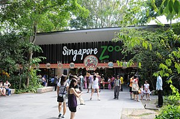

 The Singapore Zoo, formerly known as the Singapore Zoological Gardens or Mandai Zoo and now commonly known locally as the Singapore Zoo, occupies 28 hectares (69 acres) on the margins of Upper Seletar Reservoir within Singapore's heavily forested central catchment area. The zoo was built at a cost of $9 million granted by the government of Singapore and opened on 27 June 1973. There are about 315 species of animal in the zoo, of which some 16 percent are considered to be threatened species. The zoo attracts 1.7 million visitors each year. From the beginning, Singapore Zoo followed the modern trend of displaying animals in naturalistic, 'open' exhibits with hidden barriers, moats, and glass between the animals and visitors. It houses the largest captive colony of orangutans in the world. In 1987, the zoo began to display rare animals loaned by other zoos. The first animals displayed in this manner were the rare golden snub-nosed monkeys from China in 1987, which attracted more than half a million visitors. This was followed by white tigers from Cincinnati Zoo in 1988 and giant pandas from Wolong National Nature Reserve in 1990.
Singapore Page